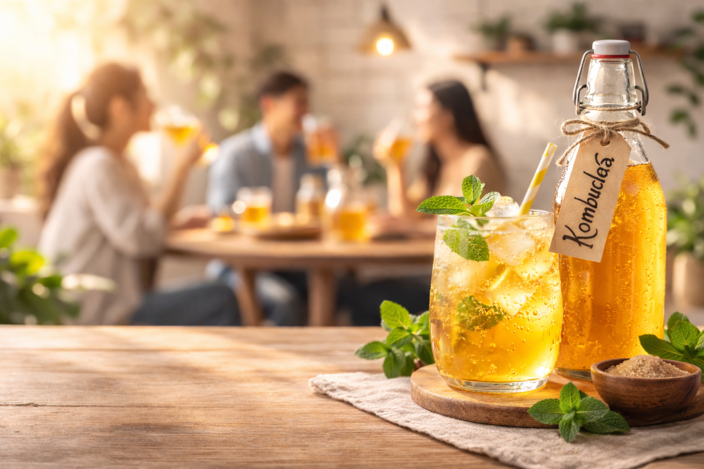
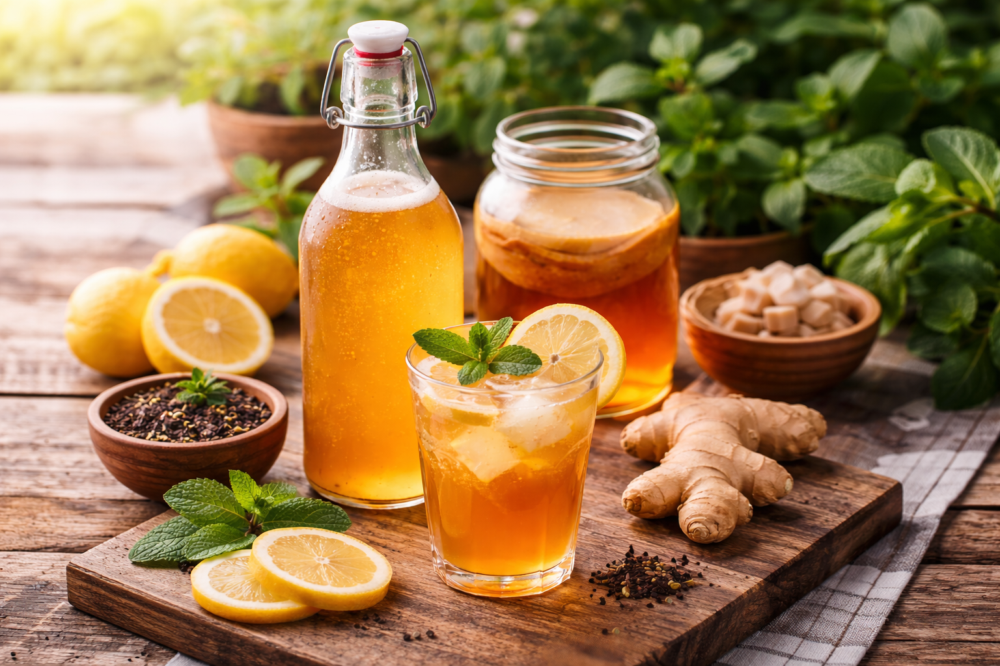

Bioteknologi kombucha merupakan bentuk penerapan bioteknologi tradisional yang memanfaatkan proses fermentasi alami. Melalui aktivitas simbiosis antara bakteri dan khamir yang tergabung dalam SCOBY (Symbiotic Culture of Bacteria and Yeast), larutan teh manis mengalami transformasi biokimia menjadi minuman fungsional yang kaya akan nilai guna.
Learn More
Bioteknologi kombucha merupakan salah satu bentuk aplikasi bioteknologi tradisional yang memanfaatkan interaksi simbiosis mutualisme antara bakteri asam asetat dan khamir, yang secara kolektif dikenal sebagai SCOBY (Symbiotic Culture of Bacteria and Yeast). Dalam ekosistem yang kompleks ini, terjadi proses fermentasi dua tahap yang saling bergantung: khamir berperan memecah sukrosa menjadi glukosa dan fruktosa yang kemudian difermentasi menjadi etanol, sementara bakteri asam asetat akan mengoksidasi etanol tersebut menjadi asam asetat, asam glukuronat, dan berbagai senyawa organik lainnya. Selain menghasilkan cita rasa asam-manis yang khas, proses bioteknologi ini juga memicu transformasi biokimia yang signifikan terhadap substrat teh, di mana kandungan antioksidan (polifenol) dari teh meningkat, serta terbentuknya senyawa bioaktif baru seperti vitamin B kompleks, enzim, dan probiotik hidup yang sangat bermanfaat bagi kesehatan mikrobiota usus dan sistem imunitas tubuh. Keberhasilan produksi kombucha sangat bergantung pada kontrol parameter lingkungan yang ketat sebagai kunci utama dalam bioteknologi pangan; suhu ideal di kisaran 25°C - 30°C harus dijaga agar metabolisme mikroorganisme tetap stabil, serta ketersediaan oksigen yang cukup agar bakteri dapat membentuk lapisan selulosa di permukaan cairan. Selain aspek nutrisi, proses ini juga menunjukkan efisiensi bioteknologi dalam meningkatkan daya simpan bahan pangan secara alami melalui pembentukan asam yang mampu menghambat pertumbuhan bakteri patogen. Dengan demikian, kombucha bukan sekadar minuman hasil fermentasi, melainkan produk bioteknologi yang merepresentasikan keseimbangan antara aktivitas mikroorganisme alami dan kebutuhan manusia akan makanan fungsional yang aman, bergizi, serta memiliki nilai ekonomi yang tinggi.

1. Air 900ml direbus hingga mendidih, kemudian teh bubuk diseduh selama ±5 menit.
2. Gula 90gr ditambahkan ke dalam teh panas, lalu diaduk menggunakan sendok hingga larut.
3. Larutan teh manis didinginkan hingga suhu ruang.
4. Larutan teh dituangkan ke dalam toples kaca yang bersih.
5. Starter kombucha dan SCOBY dimasukkan ke dalam larutan teh.
6. Wadah ditutup menggunakan kain bersih dan diikat dengan karet gelang.